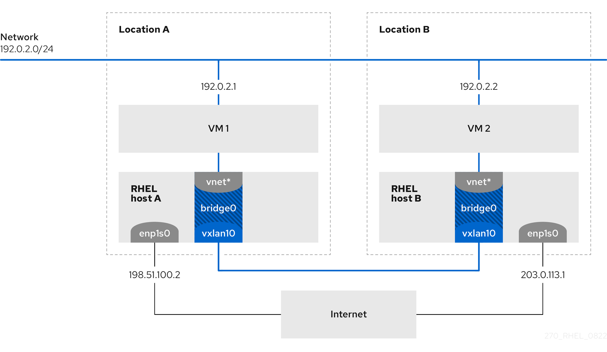

Using a VXLAN to create a virtual layer-2 domain for VMs
A virtual extensible LAN (VXLAN) is a networking protocol that tunnels layer-2 traffic over an IP network using the UDP protocol. For example, certain virtual machines (VMs) that are running on different hosts can communicate over a VXLAN tunnel. The hosts can be in different subnets or even in different data centers around the world. From the perspective of the VMs, other VMs in the same VXLAN are within the same layer-2 domain:

In this example, RHEL-host-A and RHEL-host-B use a bridge, br0, to connect the virtual network of a VM on each host with a VXLAN named vxlan10. Due to this configuration, the VXLAN is invisible to the VMs, and the VMs do not require any special configuration. If you later connect more VMs to the same virtual network, the VMs are automatically members of the same virtual layer-2 domain.
Just as normal layer-2 traffic, data in a VXLAN is not encrypted. For security reasons, use a VXLAN over a VPN or other types of encrypted connections.